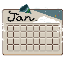
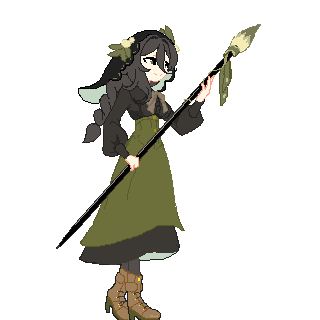
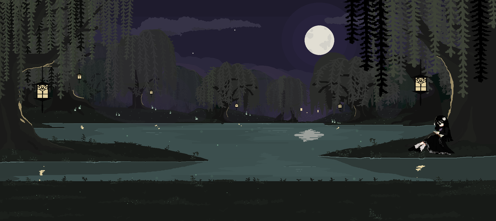
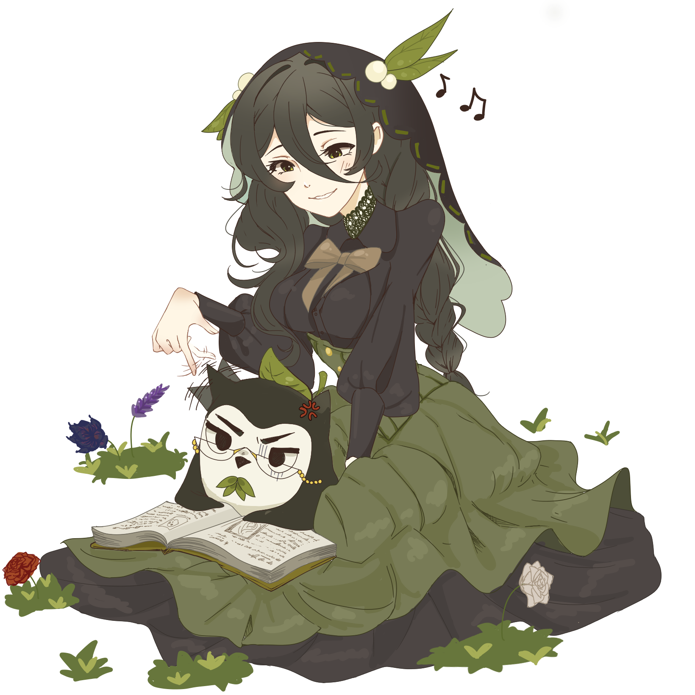
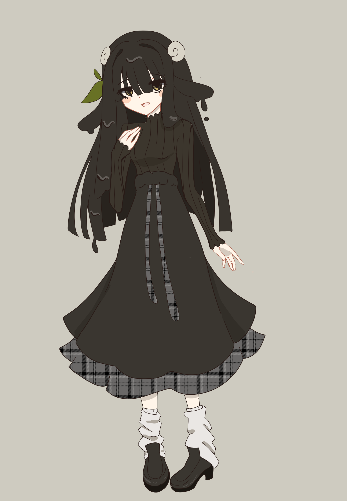

Devlog
2026.10.27
Woah! This is awkward! Long time no see, come here often?
I've been busy but even when times are tough we move in the shadows my friend. Salix has a redesign! And much has been made.
Starting with the website, I implemented some Javascript. For something fancy you ask? Perhaps. But I was thinking if the devlogs had no organization it would look like a pharmacy receipt trying to scroll through all the yap, so you can pick the month and year you want to go to. Neat, huh? October is almost over but at least if you want to know if I was eating ice cream on October the twenty seventh in twenty twenty-six, I cut down the nav time for you (And no, I am not eating ice cream). A bit of a reminder to rub it in my past self that said "but that's too haaard", just weeks before this website was made I knew absolutely 0 about front-end coding. Now we have a working site with a bell and a whistle in... 2 months? Remember to not listen to yourself, you are your own worst enemy it seems.
Now the good stuff. The game! Animations were drawn and much progress was made. Yes, even when the corridors of Willow Ink were empty echoes, there I was hunched over a desk and scribbling Salix to life. Idle, Attack string A, B, Dash, jump, run and an aerial are ready. A fighting stage was made, the tutorial stage (I didn't realize I spent all day on).



If you look at the fighting stage, you'll see this black sheep character writing. Who is that you ask? Well... that's me!

Yup! The next development made is that I reveal myself in all my inky sheep goodness. Because you need a face to the voice, don't you dear reader? You'll see me from time to time, in future videos or game cameos (SPARINGLY! I PROMISE!) and when you do see that face, know that's me, knowing you're watching me.
Right, now plans for the future: Beginning code in Godot is our absolute next step. Here is another reminder, my knowledge in gd script is also a stark 0, but we learn. No AI as promised. I'm actually excited to learn a language computers speak to execute commands. Rumor has it theyre better communicators than most humans, but don't let them know. I hear they get an ego too! WillowInk will keep you posted on the coding journey more closely than our HTML. Games will be a significant learning curve and I also hear the internet loves watching people struggle.
Next on the agenda is actual presence. Most of you probably aren't with me in present, and that's because I have no social media but we can change that. After I surpass a flag in my coding, I will be coming to you in Bluesky and Twitter.
There we are! Now that you have some progress and a face to the voice, you probably want a name to the voice too. Just call me Willow. I'm okay with the other following names though, "Homie", "Princess", "Your Lordship", "Your Highness". Something to think about :)